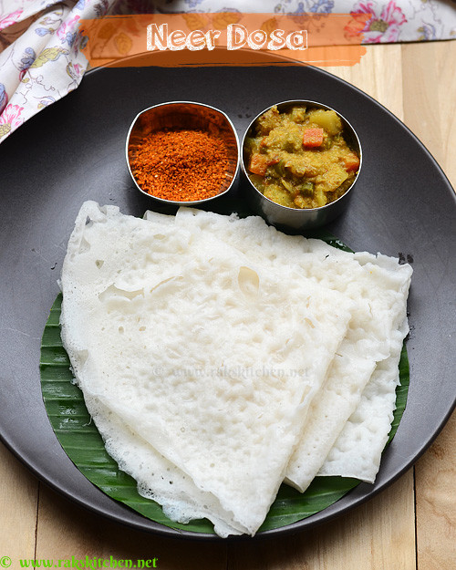

Neer Dosa

Ingredients
- 1 and a half cups of raw rice ("Sona masuri")
- 1/2 cup grated coconut
- Salt
- Soak rice for minimum 3 hrs. Drain and transfer to a mixer along with grated coconut, salt.
- Grind very smoothly adding required water. Adjust water consistency so that it is runny like we make for rava dosa. Thinner better.
- Heat a tawa and pour the prepared batter first along the outside and fill in the middle. After a minute, flip cook for half more minute. Served best with green chilli chutney